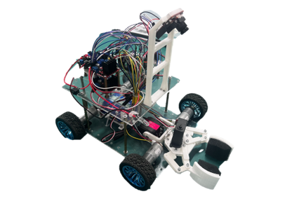

04 / Selected work
Research &
engineering projects.
Systems, algorithms, and experiments across robotic arms, aerial vehicles, embedded control, and collaborative robots.
 2026
2026Aerial Robotics · Visual Servoing
Flexible Perching System for a Miniature UAV
Designed and validated a lightweight autonomous perching system combining flexible VSERF adhesion, AprilTag visual servoing, and cascaded flight control.
View project ↗ 2025
2025Motion Planning · Humanoid Robotics
7-DOF Robotic Arm Motion Planning
Developed and optimized kinematics and trajectory-planning methods for a humanoid robotic arm, connecting MuJoCo simulation with physical validation.
View project ↗ 2025
2025Flight Control · Soft Robotics
Ultra-Lightweight DEA Drone Controller
Built a controller and simulator for a 23-gram drone powered by dielectric elastomer actuators.
View project ↗ 2024
2024Autonomous Flight · Planning
UTAT Autonomous Drone Racing
Reconstructed a Betaflight-based simulator and developed yaw-planning methods for perception-aware racing trajectories.
View project ↗ 2024
2024Collaborative Robotics · Workspace
Dual-Arm Robot Workspace Analysis
Used Monte Carlo simulation to identify feasible workspace regions while accounting for rigid coupling and inter-arm collision constraints.
View project ↗
2024Embedded Systems · Computer Vision
Intelligent Autonomous Guided Car
Led a team building a vehicle with line following, obstacle navigation, visual localization, and Bluetooth control.
View project ↗